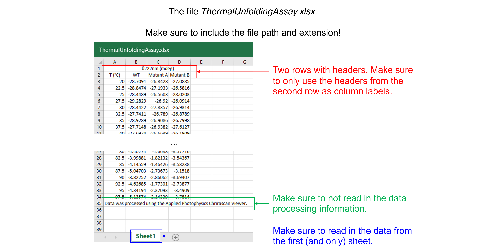
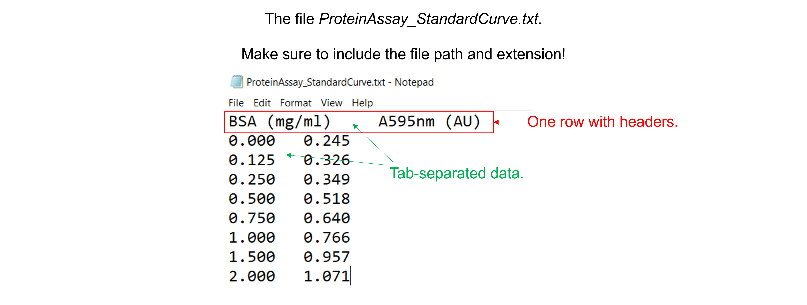
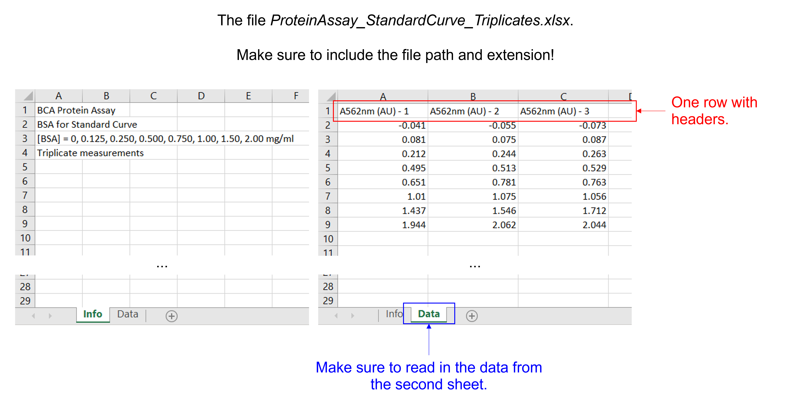

Pandas For Working With Tabular Data#
Pandas is a library designed to work with tabular data. It is built on NumPy. Data in pandas is often used to plot with Matplotlib or feed statistical analysis with SciPy. Its ease of use makes it ideal to work with large data sets.
Exercise 24
Import pandas. Use convenient naming.
Solution to Exercise 24
import pandas as pd
DataFrames have a size and shape#
Pandas Series are a one-dimensional labeled array holding data of any type.
Pandas DataFrames are structures that contain data organized in two dimensions, i.e. rows and columns. Both rows and columns have indices. Columns can have labels too.
DataFrames have a variety of properties:
size: the total number of elements
shape: the number of units along each dimension

Of note, NumPy arrays and pandas Series have one data type for the entire array or Series while pandas DataFrames have one data type per column. Missing data is shown as NaN.
Creating a DataFrame with nested lists or arrays#
To create a DataFrame, use pd.DataFrame(data, index, columns). Just pass e.g. a nested list or a 2D array as data to the DataFrame constructor. The function also has the optional index and column arguments that are used to name the row indices and column labels respectively. By default, both are (0, 1, 2, …, n). If the data contains column labels, the column argument will perform column selection instead.
Use dataframe_name.size to get the number of elements of a DataFrame as an integer value.
Use dataframe_name.shape to get the number of rows and columns of a DataFrame as a tuple.
Use dataframe_name.info() to get more information about a DataFrame.
Exercise 25
Create a pandas DataFrame for the data below, representing Michaelis-Menten parameters of wild type and mutant enzyme. Print the number of elements, rows and columns of the DataFrame. See what information the .info() function provides.
Enzyme |
\(k_{cat}\) (1/s) |
\(K_{m}\) (mM) |
|---|---|---|
Wild type |
21 |
0.54 |
D178N |
0.11 |
0.21 |
D224G |
0.05 |
|
E305G |
19 |
3.2 |
Solution to Exercise 25
Here’s one possible solution, using a list.
MMdata = [["Wild type",21,0.54],["D178N",0.11,0.21],["D224",0.05,],["E305G",19,3.2]] #create a 4 x 3 nested list with different data types. The first item (a string) is "Enzyme", the second item (a floating point number) is "kcat", and the third item (a floating point number) is "Km".
df_MMdata = pd.DataFrame(MMdata, columns=['Enzyme', 'kcat (1/s)', 'Km (mM)']) #create a pandas DataFrame from the arr_MMdata array. Use "Enzyme", "kcat (1/s)", and "Km (mM)" as column labels.
print(df_MMdata) #print the DataFrame created
print(df_MMdata.size) #print the number of elements of the bindingsitesdata DataFrame that we created
print(df_MMdata.shape) #print the number of rows and columns of the bindingsitesdata DataFrame that we created
df_MMdata.info() #print more information about the bindingsitesdata DataFrame that we created
.info() prints information about a DataFrame including the number of elements, index data types, columns, non-null values, and memory usage. Null values or empty values can be bad when analyzing data.
Creating a DataFrame from an Excel file#
We can read in data from an Excel file into Python using pandas with pd.read_excel(file_name). Do not forget to include the file path (not needed if the file is saved in the directory from which we are running the script!) and extension.
This function has several arguments. Here, we list commonly used ones:
To read in data from a specific sheet, use the argument
sheet_name. Sheet numbers start with zero! By default, this is set to0and the first sheet is used.To skip rows at the beginning and end when reading an Excel sheet, use the arguments
skiprowsandskipfooter. By default, both are set to0and no rows at the beginning and end are skipped.To only read certain columns when importing an Excel sheet, use the argument
usecols. Column numbers start with zero! By default, this is setNoneand all columns are parsed.To specify a specific row as column labels, use the argument
header. By default, this is set to0and the first row of the Excel file (with index 0) is used as column labels.To label columns when importing an Excel sheet without column names, use the arguments
header=Noneandnames=['column_name 1', ... ,'column_name_n']. To relabel columns when importing an Excel sheet that already contains column names in the first row, use the argumentsheader=None,skiprows=1, andnames=['column_name_1', ... ,'column_name_n'].
Exercise 26
Read in the data file “ThermalUnfoldingAssay.xlsx”. This Excel file contains 1 sheet, 4 columns, 32 rows with experimental data, 2 rows with column headers, and 1 row with data processing information.
{kind=link}
Solution to Exercise 26
Here’s one possible solution.
dfThermalUnfoldingAssay = pd.read_excel ('../data/ThermalUnfoldingAssay.xlsx', #create a pandas DataFrame from the filename with file path and extension shown
sheet_name=0, #use the first sheet (no need to specifically include this as we use the default setting)
skiprows=1, #skip the first row
usecols=None, #import all columns (no need to specifically include this as we use the default setting)
header=0, #use the column names from the now first row as column labels (no need to specifically include this as we use the default setting)
skipfooter=1) #skip the last row
print(dfThermalUnfoldingAssay) #print the DataFrame created
Creating a DataFrame from a text file#
We can read in data from a text file into Python using pandas with pd.read_csv(file_name). Do not forget to include the file path (not needed if the file is saved in the directory from which we are running the script!) and extension.
This function reads a comma-separated values (csv) file into DataFrame object which we can store as a named variable that can be used later. It has several arguments. Here, we list commonly used ones:
To specify the delimiter used in the csv file, use the argument
sep. By default, this is set to a comma (",") for comma-separated data. Use a space (" ") for space-separated data or a tab ('\t') for tab-separated data.To skip rows at the beginning and end when reading a csv file, use the arguments
skiprowsandskipfooter. By default, this is set to0and no rows at the beginning and end are skipped.To only read certain columns when importing a csv file, use the argument
usecols. Column numbers start with zero! By default, this is set toNoneand all columns are parsed.To specify a specific row as column labels, use the argument
header. By default, this is set to0and the first row of the csv file (with index 0) is used as column labels.To label columns when importing a csv file without column names, use the arguments
header=Noneandnames=['column_name_1', ... ,'column_name_n']. To relabel columns when importing a csv file that already contains column names in the first row, use the argumentsheader=None,skiprows=1, andnames=['column_name_1', ... ,'column_name_n'].
Exercise 27
Read in the data file “ProteinAssayStandardCurve.txt”. This text file with tab-separated data contains 2 columns, 8 rows with experimental data, and 1 row with column headers.
{kind=link}
Solution to Exercise 27
Here’s one possible solution.
dfProteinAssay = pd.read_csv ('../data/ProteinAssay_StandardCurve.txt', #create a pandas DataFrame from the filename with file path and extension shown
sep='\t', #the file contains tab-separated data
skiprows=0, #skip the first row (no need to specifically include this as we use the default setting)
usecols=None, #import all columns (no need to specifically include this as we use the default setting)
header=0, #use the column names from the now first row as column labels (no need to specifically include this as we use the default setting)
skipfooter=0) #skip the last row (no need to specifically include this as we use the default setting)
print (dfProteinAssay) #print the DataFrame created
Indexing and slicing for DataFrames using .iloc#
We can select rows, columns, and positions in a DataFrame using dataframe_name.iloc[]. There are two arguments: a row selector, and an optional column selector: dataframe_name.iloc[row_index, column_index]. Both accept the zero-based indices of rows and columns.
To select an entire row, simply specify the index of the row, e.g. dataframe_name.iloc[0] to access row 0.
To select an entire column, specify the index of the column and provide : for the row index, e.g. dataframe_name.iloc[:,0] to access column 0. Instead of using the .iloc method to extract a column, we can also use square brackets with the column name of interest. For example, both dataframe_name.iloc[:,0] and dataframe_name['column_name_1'] give the first column of the DataFrame.
We can also use a range for the row index and/or column index to slice multiple elements using: dataframe_name.iloc[start_index_row:end_index_row, start_index_column:end_index_column]. We select data from position start_index (included) to position end_index (excluded).
Exercise 28
Create a pandas DataFrame for the data below.
[Hormone] (nM) |
Fraction of binding sites occupied - protein 1 |
Fraction of binding sites occupied - protein 2 |
|---|---|---|
0.2 |
0.048 |
0.291 |
0.5 |
0.110 |
0.487 |
1.0 |
0.224 |
0.669 |
2.0 |
0.467 |
0.732 |
5.0 |
0.632 |
0.891 |
10.0 |
0.715 |
0.948 |
20.0 |
0.832 |
0.971 |
50.0 |
0.929 |
0.991 |
Select and show the fraction of binding sites occupied for protein 2 when [Hormone] (nM) = 5.0 nM.
Select and show the fraction of binding sites occupied for both proteins when [Hormone] (nM) = 5.0 nM.
Select and show the fraction of binding sites occupied for protein 2 for all [Hormone] (nM). Use two different ways.
Solution to Exercise 28
Here’s one possible solution.
arr_bindingsitesdata = np.array([[0.2,0.048,0.291], [0.5,0.110,0.487], [1.0,0.224,0.669], [2.0,0.467,0.732], [5.0,0.632,0.891], [10.0,0.715,0.948], [20.0,0.832,0.971], [50.0,0.929,0.991]]) #create an 8 x 3 array. The first item is "Hormone] (nM)", the second item is "Fraction of binding sites occupied - protein 1", and the third item is "Fraction of binding sites occupied - protein 2".
df_bindingsitesdata = pd.DataFrame(arr_bindingsitesdata, columns=['[Hormone] (nM)', 'Protein 1', 'Protein 2']) #create a pandas DataFrame from the arr_bindingsitesdata array. Use "Hormone] (nM)", "Protein 1", and "Protein 2" as column labels.
print(df_bindingsitesdata.iloc[4,2]) #select and print the third element on the fifth row. Remember that indices start from 0!
print(df_bindingsitesdata.iloc[4,1:3]) #select and print the second and third elements of the fifth row. Remember that indices start from 0 and that when we specify the end item, it goes up to but does not include that item!
print(df_bindingsitesdata.iloc[:,2]) #select and print the third column. Remember that indices start from 0!
print(df_bindingsitesdata['Protein 2']) #select and print the third column. Use the column name.
Manipulating DataFrames: inserting columns#
We use pd.dataframe_name.insert(loc, column, value) to add a new column to an existing DataFrame. This command has (loc, column, value) as input parameters for the insertion index, the column name, and the column values as list or array or …
Exercise 29
Read in the data file “ProteinAssay_StandardCurve_Triplicates.xlsx”. This Excel file contains 2 sheets, 3 columns, 8 rows with experimental data, and 1 row with column headers.
{kind=link}
Insert a column with [BSA] in mg/ml.
Solution to Exercise 29
Here’s one possible solution.
dfProteinAssayTri = pd.read_excel ('../data/ProteinAssay_StandardCurve_Triplicates.xlsx', #create a pandas DataFrame from the filename with file path and extension shown
sheet_name=1, #use the second sheet
skiprows=0, #skip no rows (no need to specifically include this as we use the default setting)
usecols=None, #import all columns (no need to specifically include this as we use the default setting)
header=0, #use the column names from the now first row as column labels (no need to specifically include this as we use the default setting)
skipfooter=0) #skip no footers (no need to specifically include this as we use the default setting)
print(dfProteinAssayTri) #print the DataFrame created
BSAconc = [0, 0.125, 0.250, 0.500, 0.750, 1.00, 1.50, 2.00] #create a list with integers containing the BSA concentrations in mg/ml
dfProteinAssayTri.insert(0, '[BSA] (mg/ml)', BSAconc) #insert the column at index 0 (i.e. make it the first column) in dfProteinAssayTri, name the column [BSA], and fill it with the data provided by BSAconc
print(dfProteinAssayTri) #print the DataFrame created
The axis parameter in mean, standard deviation …#
Use the pd.dataframe_name.mean() and pd.dataframe_name.std() functions to calculate the mean and standard deviation of the elements of each column or the elements of each row of a given DataFrame. They contain an axis argument, which is the axis for the function to be applied on. With axis=0, we calculate the mean along the 0th dimension (rows) and get the mean of elements of each column; with axis=1, we calculate the mean along the 1st dimension (columns) and get the mean of the elements of each row.
{kind=link}
We can select the rows and / or columns we want to include using dataframe_name.iloc[start_index_row:end_index_row, start_index_column:end_index_column].
Exercise 30
Use the DataFrame created in the previous exercise and the pd.dataframe_name.mean() and pd.dataframe_name.std() functions to calculate the mean and standard deviation for the three replicate A562nm measurements for each \([BSA]\) concentration. Store the information in two new columns: ‘A562nm (AU) - mean’ and ‘A562nm (AU) - std’.
Solution to Exercise 30
Here’s one possible solution.
dfProteinAssayTri['A562nm (AU) - mean'] = dfProteinAssayTri.iloc[:,1:4].mean(axis=1) #Calculate the mean for each row and store the value in a new column called 'A562nm (AU) - mean'. Use axis 1. Use columns 1 = A562nm (AU) - 1 to 3 = A562nm (AU) - 3, represented by [1:4].
dfProteinAssayTri['A562nm (AU) - std'] = dfProteinAssayTri.iloc[:,1:4].std(axis=1) #Calculate the standard deviation for each row and store the value in a new column called 'A562nm (AU) - std'. Use axis 1. Use columns 1 = A562nm (AU) - 1 to 3 = A562nm (AU) - 3, represented by [1:4].
print(dfProteinAssayTri) #print the DataFrame created
Arithmetic operations for DataFrames#
Arithmetic operations (+ for addition, - for substraction, * for multiplication, / for division, and ** for power operations) and NumPy universal functions (such as n..log10() and np.square()) can be performed on data in a DataFrame and between DataFrames.
When two DataFrames share the same row and column indices, operations follow an element-wise behavior, similar to NumPy arrays. When the two items have different shapes, e.g. working with a pandas DataFrame and a Pandas series or working with a pandas DataFrame and a scalar, the item with fewer dimensions is broadcasted to match the shape of the larger item, similar to broadcasting NumPy arrays. When the two items have different shapes and their dimensions are not compatible, an error is raised.
Arbitrary functions can be applied along the axes of a DataFrame using the dataframe_name.apply(function_name) method. It has several optional arguments. Here, we list commonly used ones:
The required
function_nameparameter takes a function that is executed on the series or dataframe.The
axisparameter is used to specify whether rows or columns are taken as input. By default, this is set to0and the function is applied to each column.The
argsparameter passes arguments to the function.
Exercise 31
For the following data,
Sample |
A280nm - 1 |
A280nm - 2 |
A280nm - 3 |
|---|---|---|---|
Sample 1 |
0.734 |
0.699 |
0.755 |
Sample 2 |
0.457 |
0.489 |
0.511 |
Sample 3 |
0.321 |
0.278 |
0.349 |
create a Pandas DataFrame,
calculate the mean for the three replicate A280nm measurements for each sample and store the information in a new column,
apply the Beer-Lambert law to all samples, use a path length of 1 cm and an extinction coefficient of 43824 \(M^{-1} cm^{-1}\). Store the information in a new column.
Solution to Exercise 31
Here’s one possible solution.
#Create the pandas DataFrame
dataA280nm = [['sample 1', 0.734, 0.699, 0.755],
['sample 2', 0.457, 0.489, 0.511],
['sample 3', 0.321, 0.278, 0.349]] #create a 3 x 4 nested list with different data types. The first item (a string) is "Sample", the second to fourth items (floating point numbers) are for "A280nm - 1" to "A280nm - 3".
dfA280nm = pd.DataFrame(dataA280nm, columns=['Sample', 'A280nm - 1', 'A280nm - 2', 'A280nm - 3']) #create a pandas DataFrame from the dataA280nm nested list. Use "Sample" and "A280nm - 1" to "A280nm - 3" as column labels.
print(dfA280nm) #print the DataFrame created
#Cacluate the means
dfA280nm['A280nm - mean'] = dfA280nm.iloc[:,1:4].mean(axis=1) #calculate the mean for the three replicate A280nm measurements (i.e. columns 1 = "A280nm - 1" to 3 = "A280nm - 3", represented by [1:4]) for each sample and store the information in a new column called 'A280nm - mean'.
print(dfA280nm) #print the DataFrame created
#Calculate the concentrations
def beer_lambert(absorbance, epsilon, path_length): #define the Beer-Lambert function
"""
Evaluate the concentration of a solution, using the Beer-Lambert law.
Args:
absorbance (float) in AU
epsilon (float) in L/(mol cm)
path_length (float) in cm
Returns:
concentration of the solution (float) in (mol/L)
"""
concentration = absorbance / (epsilon * path_length)
return concentration
dfA280nm['Conc (M)'] = dfA280nm['A280nm - mean'].apply(beer_lambert, args=(43824, 1)) #apply the Beer-Lambert function with arguments 43824, and 1 (after the absorbance value) to the mean of all samples, i.e. 'A280nm - mean' and store the information in a new column called 'Conc (M)'
print(dfA280nm) #print the DataFrame created